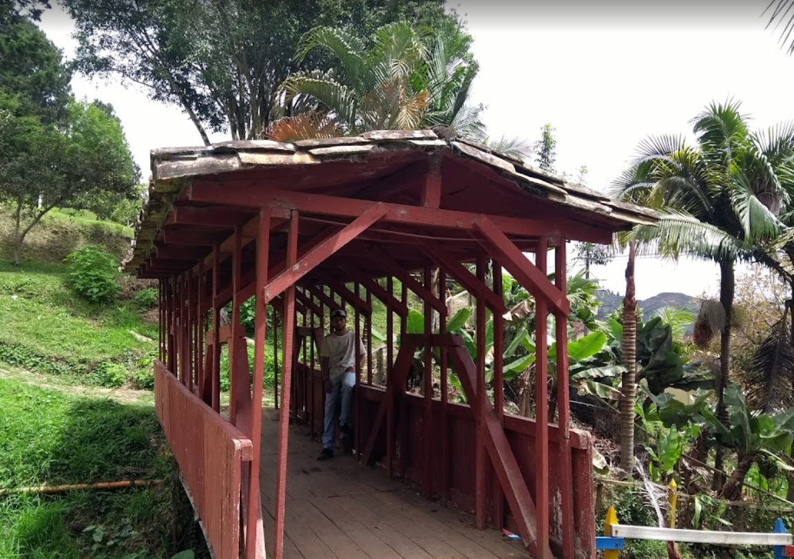
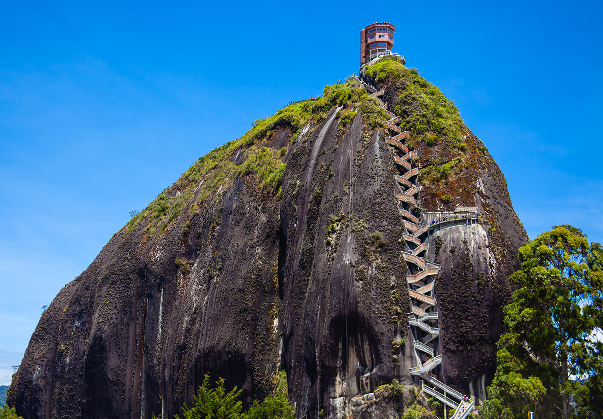
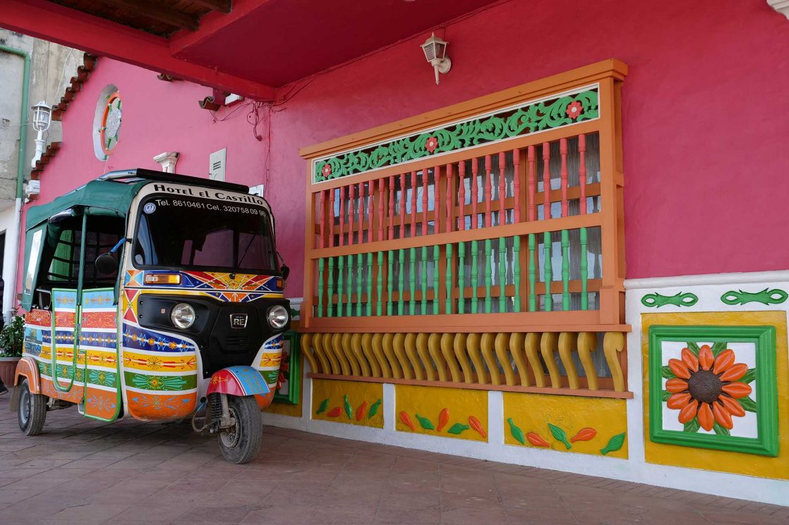
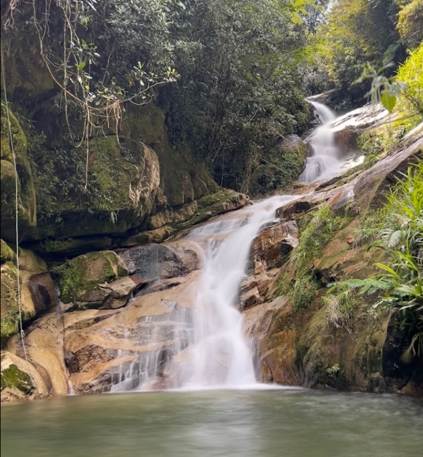

ITINERARIO


DÍA 1
Inicio del viaje
Antes de todo, hay que atterizar sobre la tierra Columbiana en el aeropuerto international José María Córdova cerca de Medellin. Para recargar las baterias después el vuelo, podreís comer en el restaurante Donde Francia en el objetivo de gustar a la gastronomia columbiana como las bananas plátanos. Para empezar bien el viaje, la actividad de Motocross a Pista Motocross Road Track Guarne parece perfecta.

Esta actividad unica y deportiva daráos un deseo de descubrir más el país. El día acabado, es el tiempo de dormir y descanzazse. Por eso, hemos ecogido el centro de encuentros La Rondalla. El hotel es grande, las piezas son espaciosas y limpias. Por la tarde podreís os divertir en las piscinas.
DÍA 2
El Peñol
Tras un corto trayecto en auto, llegarás a Peñol, una pequeña y conocida ciudad de la región. De hecho, en el Parque Ecológico, el contacto con la naturaleza va relajaros. Es un lugar ideal para observar los animales y los arboles. Podreís disfrutar de un momento tranquillo. Para comer hay muchos restaurantes en la ciudad y encontraréis lo que buscáis.
Un poco más en el centro de la cuidad de 16 000 habitantes, el día puede seguir en el Museo Historico del Peñol que expone arte social. Este museo tiene permite la valoración, difusión del patrimonio cultural local y nacional. Además este museo es una fundación de volountariado de niños o adultos.

Fue fundado el 18 de mayo de 1996, el dia mundial de los museos. Podreís pasar la noche en el hotel Lindo Amanecer. Y descansa bien porque mañana os esparaìs un día duro.
DÍA 3
Guatapé, un pueblo de mil colores

Este día se pasa un poca más lejos. Estamos seguros que nunca ustedes haís visto un lugar como este. A 2 horas de Medellin, la Piedra del Peñol es inevitable. Es una roca de 220 metros y para subir a la arriba, hay que montar más de 700 marchas !
No es la unica actividad, podreís hacer escalada o bañaros en el lago además de hacer kayak o diferentes juegos. No tendreís que olvidar vuestro traje de bano y buen humor. Es un espectacular paisaje, un hermoso paisaje de autentico vértigo.
Después un momento pasado en la Piedra del Peñol, hay que volver en la ciudad para comer. Y hay nada de más guapo que el pueblo Guatapé y sus calidos colores, sus casas multicoloreadas y balcones autenticos.

Podreís visitar la iglesia Nuestra Señora del Carmen muy majestuosa o la Plazoleta de los Zócalos que conta une historia. Depués día, como este, y que seís cansados, ir en el hotel Adriana's Bambu-Lodge.
DÍA 4
Cascadá la Samaria
Finalmente, para el ultimó día, proponemos de ver la Cascadá la Samaria ubicada entre Guatapé y Sans Rafael sobre la ruta vereda.

Podreís bañaros la mañana y comer al restaurante el Rey de la Parrilla a San Rafael antes de ir al Puerto Nare International Aeropuerto para rellegar hasta Europa, con buenos recuerdos.
Nuestras agencias se sitúan en...
España
América Latina
Otras paìses